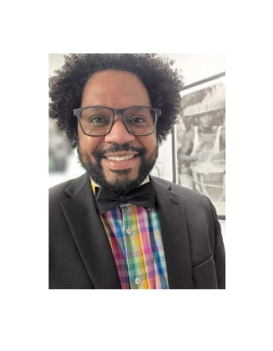

I am Dr. Jean-Philippe Gourdine, aka Doctor Jay-P, Assistant Professor of Chemistry at Lewis & Clark College (L&C). I teach Structural (CHEM 330) and Metabolic Biochemistry (CHEM 335), Biochemistry (CHEM 336), and Chemistry labs Intro (CHEM 110) and Organic (CHEM 220). I am originally from Guadeloupe, an archipelago in the Caribbean (a French Overseas Department), where I got my PhD in Marine Biochemistry in 2006 at Université des Antilles et de la Guyane. I did a teaching and research postdoc in Martinique and Grenoble in Structural Glycobiology in Dr. Anne Imberty's lab, then moved to Atlanta, GA, in 2009 for my second postdoc in Glycobiology at Emory University in Dr. Richard Cummings' lab.
Since 2014, I have been living in Portland, Oregon. I worked at:
Since August 2023, I have been an Assistant Professor on a tenure track at L&C, where I am starting my own lab. In September 2025, I received a National Science Foundation Award (NSF), which allowed me to continue my research on the urobiome metabolism toward host glycoproteins. (Did you know urine is NOT sterile?) I hired fantastic undergraduate students who did research during the year through (a Course Undergraduate Research Experience (CURE) and during the summer 2026 ). I am back in Grenoble, France, for my sabbatical in Structural Glycobiology in Dr. Annabelle Varrot's lab (Crystallographer), closely working with Dr. Marie Couturier (Oral & Gut Microbiota).
My research interests include:
You can find my recent presentations: